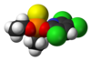

chlorpyrifos

Definition: Chlorpyrifos (CPS), also known as Chlorpyrifos ethyl, is an organophosphate pesticide that has been used on crops, animals, and buildings, and in other settings, to kill several pests, including insects and worms. It acts on the nervous systems of insects by inhibiting the acetylcholinesterase enzyme. Chlorpyrifos was patented in 1966 by Dow Chemical Company.Chlorpyrifos is considered moderately hazardous to humans (Class II) by the World Health Organization based on acute toxicity information dating to 1999. Exposure surpassing recommended levels has been linked to neurological effects, persistent developmental disorders, and autoimmune disorders. Exposure during pregnancy may harm the mental development of children.In the United Kingdom, the use of chlorpyrifos was banned as of 1 April 2016 (with one minor exception).
Source: Wikipedia
Wikipedia Page (Something wrong with this association? Let us know.)
Wikidata Page (Something wrong with this association? Let us know.)